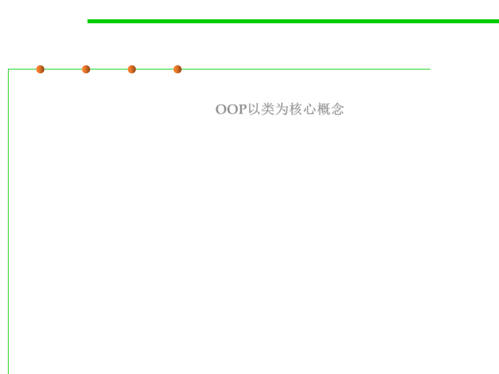

3.4 Object-Oriented Programming (OOP)
Criteria of Object-Orientation
▪ An OO programming method / language should have the notion of
class as the central concept. OOP以类为核心概念
▪ The language should make it possible to equip a class and its
features with assertions (preconditions, postconditions and
invariants) and exceptional handling, relying on tools to produce
documentation out of these assertions and, optionally, monitor them
at run time. ADT
– They help produce reliable software;
– They provide systematic documentation;
– They are a central tool for testing and debugging object-oriented software.
▪ Static typing: A well-defined type system should, by enforcing a
number of type declaration and compatibility rules, guarantee the
run-time type safety of the systems it accepts.